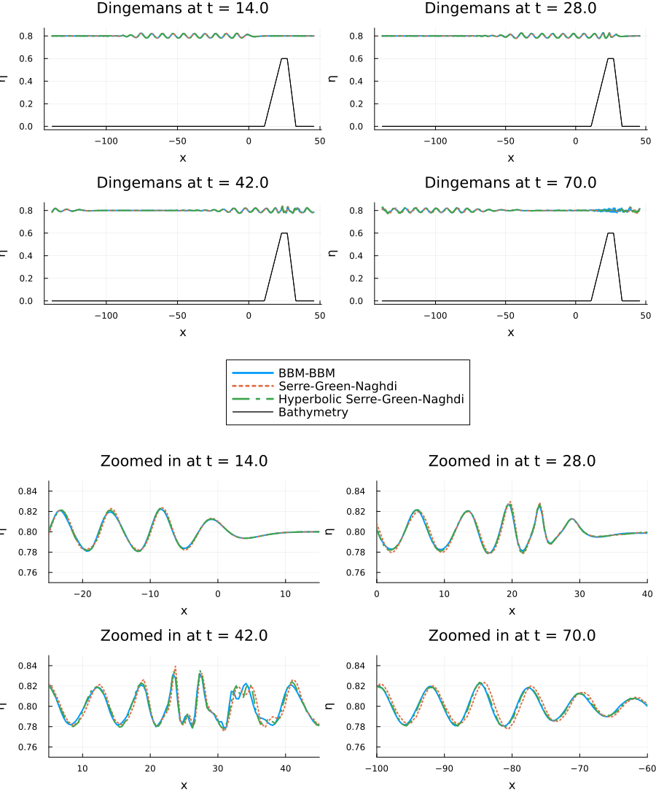

Dingemans Experiment
The Dingemans experiment provides a classic benchmark for validating dispersive shallow water models against experimental data. This experiment, conducted by Dingemans in 1994, simulates waves generated by a wave maker that propagate over a varying underwater topography (bathymetry).
Experimental Setup
The experiment features waves with a small amplitude (A = 0.02) that encounter a trapezoidal bathymetry profile. The bottom topography starts flat, then rises to form an underwater "hill" before descending back to the original depth. This setup tests how well different dispersive wave models can capture the complex wave transformations that occur when waves interact with varying bottom topography.
The bathymetry profile consists of:
- A flat section from the wave maker to x = 11.01
- A linearly increasing slope from x = 11.01 to x = 23.04 (maximum height of 0.6)
- A flat plateau from x = 23.04 to x = 27.04
- A linearly decreasing slope from x = 27.04 to x = 33.07
- A flat section beyond x = 33.07
This configuration allows researchers to study wave shoaling (changes in wave characteristics due to depth variations), which is crucial for understanding coastal wave dynamics.
Numerical Simulation
Let's implement the Dingemans experiment and compare the performance of different dispersive shallow water models available in DispersiveShallowWater.jl.
First, we load the necessary packages:
using DispersiveShallowWater, OrdinaryDiffEqTsit5, PlotsNext, we set up the different equation systems we want to compare. Each represents a different level of approximation to the full water wave equations:
# BBM-BBM equations with variable bathymetry
bbm = BBMBBMEquations1D(bathymetry_type = bathymetry_variable,
gravity = 9.81, eta0 = 0.0)
# Svärd-Kalisch equations with specific parameter set
sk = SvaerdKalischEquations1D(gravity = 9.81, eta0 = 0.8, alpha = 0.0,
beta = 0.27946992481203003, gamma = 0.0521077694235589)
# Serre-Green-Naghdi equations with variable bathymetry
sgn = SerreGreenNaghdiEquations1D(bathymetry_type = bathymetry_variable,
gravity = 9.81)
# Hyperbolic approximation of Serre-Green-Naghdi equations
hysgn = HyperbolicSerreGreenNaghdiEquations1D(bathymetry_type = bathymetry_mild_slope,
lambda = 500.0, gravity = 9.81)HyperbolicSerreGreenNaghdiEquations1D-BathymetryMildSlope
#variables: 5
The initial condition initial_condition_dingemans automatically sets up the trapezoidal bathymetry and initial wave field based on the dispersion relation of the Euler equations:
initial_condition = initial_condition_dingemans
boundary_conditions = boundary_condition_periodicboundary_condition_periodicWe create a computational domain that's large enough to contain the entire experimental setup, with the wave maker positioned appropriately:
coordinates_min = -138.0
coordinates_max = 46.0
N = 512
mesh = Mesh1D(coordinates_min, coordinates_max, N)Mesh1D{Float64}
xmin: -138.0
xmax: 46.0
N: 512For the spatial discretization, we use fourth-order accurate summation-by-parts operators:
accuracy_order = 4
solver = Solver(mesh, accuracy_order)Solver{Float64}
D1: Periodic first-derivative operator of order 4 on a grid in [-138.0, 46.0] using 512 nodes,
stencils with 2 nodes to the left, 2 nodes to the right, and coefficients of Fornberg (1998)
Calculation of Weights in Finite Difference Formulas.
SIAM Rev. 40.3, pp. 685-691.
D2: Periodic second-derivative operator of order 4 on a grid in [-138.0, 46.0] using 512 nodes,
stencils with 2 nodes to the left, 2 nodes to the right, and coefficients of Fornberg (1998)
Calculation of Weights in Finite Difference Formulas.
SIAM Rev. 40.3, pp. 685-691.
D3: Periodic third-derivative operator of order 6 on a grid in [-138.0, 46.0] using 512 nodes,
stencils with 3 nodes to the left, 3 nodes to the right, and coefficients of Fornberg (1998)
Calculation of Weights in Finite Difference Formulas.
SIAM Rev. 40.3, pp. 685-691.
We set up the time integration parameters. The experiment runs for a relatively long time (70 time units) to observe the full wave propagation and interaction with the bathymetry:
tspan = (0.0, 70.0)
saveat = range(tspan..., length = 500)0.0:0.1402805611222445:70.0Now we create semidiscretizations for each equation system. Each semidiscretization bundles the mesh, equations, initial condition, solver, and boundary conditions:
semi_bbm = Semidiscretization(mesh, bbm, initial_condition, solver,
boundary_conditions = boundary_conditions)
semi_sk = Semidiscretization(mesh, sk, initial_condition, solver,
boundary_conditions = boundary_conditions)
semi_sgn = Semidiscretization(mesh, sgn, initial_condition, solver,
boundary_conditions = boundary_conditions)
semi_hysgn = Semidiscretization(mesh, hysgn, initial_condition, solver,
boundary_conditions = boundary_conditions)Semidiscretization
#spatial dimensions: 1
mesh: Mesh1D{Float64} with length 512
equations: HyperbolicSerreGreenNaghdiEquations1D-BathymetryMildSlope
initial condition: initial_condition_dingemans
boundary condition: boundary_condition_periodic
source terms: nothingWe convert each semidiscretization to an ODE problem and solve using the Tsit5 time integrator:
ode_bbm = semidiscretize(semi_bbm, tspan)
ode_sk = semidiscretize(semi_sk, tspan)
ode_sgn = semidiscretize(semi_sgn, tspan)
ode_hysgn = semidiscretize(semi_hysgn, tspan)
sol_bbm = solve(ode_bbm, Tsit5(), abstol = 1e-7, reltol = 1e-7,
save_everystep = false, saveat = saveat)
sol_sk = solve(ode_sk, Tsit5(), abstol = 1e-7, reltol = 1e-7,
save_everystep = false, saveat = saveat)
sol_sgn = solve(ode_sgn, Tsit5(), abstol = 1e-7, reltol = 1e-7,
save_everystep = false, saveat = saveat)
sol_hysgn = solve(ode_hysgn, Tsit5(), abstol = 1e-7, reltol = 1e-7,
save_everystep = false, saveat = saveat)retcode: Success
Interpolation: 1st order linear
t: 500-element Vector{Float64}:
0.0
0.1402805611222445
0.280561122244489
0.42084168336673344
0.561122244488978
0.7014028056112225
0.8416833667334669
0.9819639278557114
1.122244488977956
1.2625250501002003
⋮
68.87775551102204
69.01803607214428
69.15831663326654
69.29859719438878
69.43887775551102
69.57915831663327
69.71943887775551
69.85971943887776
70.0
u: 500-element Vector{RecursiveArrayTools.ArrayPartition{Float64, NTuple{5, Vector{Float64}}}}:
([0.8, 0.8, 0.8, 0.8, 0.8, 0.8, 0.8, 0.8, 0.8, 0.8 … 0.8, 0.8, 0.8, 0.8, 0.8, 0.8, 0.8, 0.8, 0.8, 0.8], [0.0, 0.0, 0.0, 0.0, 0.0, 0.0, 0.0, 0.0, 0.0, 0.0 … 0.0, 0.0, 0.0, 0.0, 0.0, 0.0, 0.0, 0.0, 0.0, 0.0], [0.0, 0.0, 0.0, 0.0, 0.0, 0.0, 0.0, 0.0, 0.0, 0.0 … 0.0, 0.0, 0.0, 0.0, 0.0, 0.0, 0.0, 0.0, 0.0, 0.0], [0.0, 0.0, 0.0, 0.0, 0.0, 0.0, 0.0, 0.0, 0.0, 0.0 … 0.0, 0.0, 0.0, 0.0, 0.0, 0.0, 0.0, 0.0, 0.0, 0.0], [0.8, 0.8, 0.8, 0.8, 0.8, 0.8, 0.8, 0.8, 0.8, 0.8 … 0.8, 0.8, 0.8, 0.8, 0.8, 0.8, 0.8, 0.8, 0.8, 0.8])
([0.8, 0.8, 0.8, 0.8, 0.8, 0.8, 0.8, 0.8, 0.8, 0.8 … 0.8, 0.8, 0.8, 0.8, 0.8, 0.8, 0.8, 0.8, 0.8, 0.8], [-5.3142120833673936e-17, -5.3142120833673936e-17, -8.192743628524732e-17, -8.192743628524732e-17, -8.192743628524732e-17, -8.192743628524732e-17, -8.192743628524732e-17, -8.192743628524732e-17, -8.192743628524732e-17, -8.192743628524732e-17 … -8.192743628524732e-17, -8.192743628524732e-17, -8.192743628524732e-17, -8.192743628524732e-17, -8.192743628524732e-17, -8.192743628524732e-17, -8.192743628524732e-17, -8.192743628524732e-17, -5.3142120833673936e-17, -5.3142120833673936e-17], [0.0, 0.0, 0.0, 0.0, 0.0, 0.0, 0.0, 0.0, 0.0, 0.0 … 0.0, 0.0, 0.0, 0.0, 0.0, 0.0, 0.0, 0.0, 0.0, 0.0], [0.0, 0.0, 0.0, 0.0, 0.0, 0.0, 0.0, 0.0, 0.0, 0.0 … 0.0, 0.0, 0.0, 0.0, 0.0, 0.0, 0.0, 0.0, 0.0, 0.0], [0.8, 0.8, 0.8, 0.8, 0.8, 0.8, 0.8, 0.8, 0.8, 0.8 … 0.8, 0.8, 0.8, 0.8, 0.8, 0.8, 0.8, 0.8, 0.8, 0.8])
([0.8, 0.8, 0.8, 0.8, 0.8, 0.8, 0.8, 0.8, 0.8, 0.8 … 0.8, 0.8, 0.8, 0.8, 0.8, 0.8, 0.8, 0.8, 0.8, 0.8], [-1.0628424166734791e-16, -1.0628424166734791e-16, -1.6385487257049468e-16, -1.6385487257049468e-16, -1.6385487257049468e-16, -1.6385487257049468e-16, -1.6385487257049468e-16, -1.6385487257049468e-16, -1.6385487257049468e-16, -1.6385487257049468e-16 … -1.6385487257049468e-16, -1.6385487257049468e-16, -1.6385487257049468e-16, -1.6385487257049468e-16, -1.6385487257049468e-16, -1.6385487257049468e-16, -1.6385487257049468e-16, -1.6385487257049468e-16, -1.0628424166734791e-16, -1.0628424166734791e-16], [0.0, 0.0, 0.0, 0.0, 0.0, 0.0, 0.0, 0.0, 0.0, 0.0 … 0.0, 0.0, 0.0, 0.0, 0.0, 0.0, 0.0, 0.0, 0.0, 0.0], [-4.694525975153546e-276, -1.7486281172404539e-258, 1.3312549372485133e-256, 4.48676377027719e-239, -3.2850316731730504e-237, -3.770986685180208e-220, 3.450695722021145e-218, 2.927781603061892e-201, -7.342140784810955e-184, 4.165617192376014e-182 … 0.0, 0.0, 0.0, 0.0, 0.0, 0.0, 0.0, -2.406342344542703e-298, 3.9284211006776193e-296, 3.249266226601743e-278], [0.8, 0.8, 0.8, 0.8, 0.8, 0.8, 0.8, 0.8, 0.8, 0.8 … 0.8, 0.8, 0.8, 0.8, 0.8, 0.8, 0.8, 0.8, 0.8, 0.8])
([0.8, 0.8, 0.8, 0.8, 0.8, 0.8, 0.8, 0.8, 0.8, 0.8 … 0.8, 0.8, 0.8, 0.8, 0.8, 0.8, 0.8, 0.8, 0.8, 0.8], [-1.594263625010219e-16, -1.594263625010219e-16, -2.4578230885574197e-16, -2.4578230885574197e-16, -2.4578230885574197e-16, -2.4578230885574197e-16, -2.4578230885574197e-16, -2.4578230885574197e-16, -2.4594694714084853e-16, -2.445517464278435e-16 … -2.4578230885574197e-16, -2.4578230885574197e-16, -2.4578230885574197e-16, -2.4578230885574197e-16, -2.4578230885574197e-16, -2.4578230885574197e-16, -2.4578230885574197e-16, -2.4578230885574197e-16, -1.594263625010219e-16, -1.594263625010219e-16], [0.0, 0.0, 0.0, 0.0, 0.0, 0.0, 0.0, 0.0, 0.0, 0.0 … 0.0, 0.0, 0.0, 0.0, 0.0, 0.0, 0.0, 0.0, 0.0, 0.0], [-5.034104417271718e-128, 2.0746138163582365e-125, -2.0024218303547379e-109, 4.7955447579565503e-107, -4.960264468697412e-74, 1.0925605476769474e-72, 1.413061853714598e-55, -4.510587852199153e-54, 5.1991512257912984e-37, 1.1432179972132094e-35 … 6.753783613174213e-240, -4.107848649381556e-238, 1.7383064486373616e-220, -1.2533312961207744e-218, 1.1804686878434882e-201, 4.585531057576894e-185, -5.983512604691488e-183, -9.742562405493197e-165, 1.3263687561218948e-146, 3.962902418384601e-144], [0.8, 0.8, 0.8, 0.8, 0.8, 0.8, 0.8, 0.8, 0.8, 0.8 … 0.8, 0.8, 0.8, 0.8, 0.8, 0.8, 0.8, 0.8, 0.8, 0.8])
([0.8, 0.8, 0.8, 0.7999999999999998, 0.8000000000000006, 0.7999999999999989, 0.8000000000000027, 0.7999999999999937, 0.8000000000000149, 0.7999999999999656 … 0.8, 0.8, 0.8, 0.8, 0.8, 0.8, 0.8, 0.8, 0.8, 0.8], [-2.1793071757008962e-16, -3.589121372862757e-16, 1.7172426658068118e-15, -2.286360005612331e-15, 7.642944384658332e-15, -1.727349544184335e-14, 3.688530493117881e-14, -9.547236118043399e-14, 2.268333636184e-13, -5.189682978200439e-13 … -3.277097451409894e-16, -3.277097451409894e-16, -3.277097451409894e-16, -3.277097451409894e-16, -3.277097451409894e-16, -3.277097451409894e-16, -3.277097451409894e-16, -3.277097451409894e-16, -2.1256848333469587e-16, -2.1256848333469587e-16], [0.0, 0.0, 0.0, 0.0, 0.0, 0.0, 0.0, 0.0, 0.0, 0.0 … 0.0, 0.0, 0.0, 0.0, 0.0, 0.0, 0.0, 0.0, 0.0, 0.0], [-2.6916316873320614e-34, 7.515866197042918e-33, -4.7080619865862546e-17, -3.0646355835144977e-15, 2.4985207848462527e-15, -1.4689027807631185e-14, 2.6980092694110524e-14, -6.517983814791774e-14, 1.6383611978920996e-13, -3.9673121944414056e-13 … 2.6684574016183496e-143, -2.697204709190627e-126, 4.385361170678163e-124, 6.390951886347209e-108, -8.069327485764239e-106, -8.862070439663875e-89, 5.996828521616151e-72, 3.5003946800961427e-70, 1.6158553946794731e-53, -1.402605253637696e-51], [0.8, 0.8, 0.8, 0.8, 0.8, 0.7999999999999998, 0.8000000000000006, 0.799999999999999, 0.8000000000000026, 0.7999999999999932 … 0.8, 0.8, 0.8, 0.8, 0.8, 0.8, 0.8, 0.8, 0.8, 0.8])
([0.8000000000000248, 0.7999999999999506, 0.8000000000000963, 0.7999999999998176, 0.8000000000003353, 0.7999999999994054, 0.8000000000010132, 0.7999999999983514, 0.8000000000025294, 0.7999999999964211 … 0.8, 0.8, 0.8, 0.7999999999999999, 0.8000000000000004, 0.7999999999999994, 0.8000000000000012, 0.7999999999999974, 0.800000000000006, 0.799999999999988], [3.5105542221653507e-13, -6.917042847678012e-13, 1.3352995477250355e-12, -2.479509908743102e-12, 4.436910816758017e-12, -7.660340851253971e-12, 1.259850328629199e-11, -1.945629502472146e-11, 2.7585883355280603e-11, -3.4046496046274217e-11 … -4.115724597822659e-16, -3.5799582711283176e-16, -4.085533407236536e-16, -3.751743911442158e-15, 5.879765663407683e-15, -9.969576090680706e-15, 1.96937619964656e-14, -3.92501463302681e-14, 8.698738316245862e-14, -1.765916629901717e-13], [0.0, 0.0, 0.0, 0.0, 0.0, 0.0, 0.0, 0.0, 0.0, 0.0 … 0.0, 0.0, 0.0, 0.0, 0.0, 0.0, 0.0, 0.0, 0.0, 0.0], [3.3343072028332874e-13, -6.718329372812307e-13, 1.3395734225669693e-12, -2.6233054103871067e-12, 4.963162390950098e-12, -9.12578070754484e-12, 1.6199173594795674e-11, -2.7641133148890267e-11, 4.4814491212027406e-11, -6.819439424875946e-11 … -4.486078460345391e-51, 5.1361905679068935e-34, -7.089609166136894e-17, -4.1525472584438624e-16, 4.031753482096902e-15, -8.417180906877415e-15, 2.2043736845267795e-14, -3.6805653578485627e-14, 7.864473762791264e-14, -1.6230261187615523e-13], [0.8000000000000069, 0.7999999999999853, 0.8000000000000311, 0.7999999999999364, 0.8000000000001277, 0.799999999999749, 0.8000000000004807, 0.799999999999106, 0.8000000000016161, 0.799999999997178 … 0.8, 0.8, 0.8, 0.8, 0.8, 0.7999999999999999, 0.8000000000000004, 0.7999999999999993, 0.8000000000000014, 0.7999999999999967])
([0.7999999999996028, 0.8000000000010764, 0.7999999999976658, 0.8000000000044256, 0.7999999999924846, 0.8000000000114049, 0.7999999999849963, 0.8000000000154752, 0.7999999999929234, 0.7999999999799678 … 0.8000000000000052, 0.799999999999991, 0.8000000000000164, 0.7999999999999733, 0.8000000000000408, 0.7999999999999399, 0.8000000000000799, 0.7999999999999123, 0.8000000000000558, 0.800000000000073], [-1.0176240479156365e-11, 2.2127943842876837e-11, -4.249027926957679e-11, 7.358064869156785e-11, -1.148411643974579e-10, 1.5751762416349203e-10, -1.7583987214597906e-10, 1.1366350814487062e-10, 1.314333116169273e-10, -7.198438510684097e-10 … 6.7799988366122e-14, -1.236746169543938e-13, 1.9617865754405256e-13, -3.1886862146051834e-13, 4.571803012317182e-13, -5.945853235702794e-13, 6.448722880816782e-13, -3.2300018027353433e-13, -8.601252186423758e-13, 3.847247891067022e-12], [0.0, 0.0, 0.0, 0.0, 0.0, 0.0, 0.0, 0.0, 0.0, 0.0 … 0.0, 0.0, 0.0, 0.0, 0.0, 0.0, 0.0, 0.0, 0.0, 0.0], [-3.891212202675296e-12, 1.4877261314423248e-11, -3.7680950698826226e-11, 7.98773062716229e-11, -1.50542841695577e-10, 2.567437572828287e-10, -3.94611640467463e-10, 5.323004411605518e-10, -5.802335215041883e-10, 3.4883061183895227e-10 … 6.655612402400053e-14, -1.4187560674247578e-13, 2.4510454136454337e-13, -4.3299026349092436e-13, 7.163600974100295e-13, -1.0974832151333304e-12, 1.5855550673096386e-12, -2.0468635872792244e-12, 2.0236172475489324e-12, -6.758260210140582e-13], [0.8000000000003495, 0.799999999999632, 0.8000000000002039, 0.8000000000003851, 0.7999999999981844, 0.8000000000047377, 0.7999999999899664, 0.8000000000186599, 0.7999999999688432, 0.8000000000465718 … 0.800000000000002, 0.7999999999999962, 0.8000000000000071, 0.7999999999999862, 0.8000000000000249, 0.799999999999956, 0.8000000000000753, 0.7999999999998775, 0.8000000000001884, 0.7999999999997289])
([0.8000000000232214, 0.7999999999647567, 0.8000000000459365, 0.7999999999530525, 0.8000000000229553, 0.8000000000494439, 0.7999999998006047, 0.8000000004524311, 0.7999999991900156, 0.8000000012151436 … 0.7999999999998544, 0.8000000000002424, 0.7999999999996352, 0.8000000000004792, 0.7999999999995039, 0.8000000000002225, 0.8000000000006845, 0.7999999999972336, 0.8000000000067597, 0.7999999999865559], [3.750354366177304e-10, -5.144537917249226e-10, 5.728629218762322e-10, -3.850607501134904e-10, -3.2240545342317103e-10, 1.9270542782932322e-9, -4.833280623105877e-9, 9.262437294585328e-9, -1.485177940092527e-8, 2.0046928180467137e-8 … -2.277184060327472e-12, 3.493495529705132e-12, -4.750813668739386e-12, 5.229353072490243e-12, -3.1478745759818745e-12, -4.883536076580613e-12, 2.450713644529173e-11, -6.37918554333984e-11, 1.323206007213527e-10, -2.373435471352427e-10], [0.0, 0.0, 0.0, 0.0, 0.0, 0.0, 0.0, 0.0, 0.0, 0.0 … 0.0, 0.0, 0.0, 0.0, 0.0, 0.0, 0.0, 0.0, 0.0, 0.0], [4.5248455582112115e-10, -8.012910755513317e-10, 1.2524949388268012e-9, -1.7012296651385405e-9, 1.8762530660956867e-9, -1.24602251171509e-9, -1.0561491613584643e-9, 6.210953075055712e-9, -1.546534086856329e-8, 2.9485482175416884e-8 … -2.6307227194322855e-12, 4.777330860790892e-12, -7.974022750920494e-12, 1.2082543089890143e-11, -1.6089768848250668e-11, 1.7169129430551488e-11, -9.09164991974129e-12, -1.9638195321686396e-11, 8.776915585753792e-11, -2.218682673722559e-10], [0.8000000000028782, 0.7999999999888345, 0.800000000026798, 0.7999999999473797, 0.8000000000900379, 0.7999999998640602, 0.8000000001776549, 0.799999999813861, 0.800000000108912, 0.8000000001332148 … 0.7999999999999721, 0.8000000000000792, 0.7999999999998214, 0.8000000000003522, 0.7999999999993676, 0.800000000001034, 0.7999999999984739, 0.8000000000019657, 0.799999999998019, 0.8000000000008142])
([0.8000000000021797, 0.7999999998035092, 0.8000000005437302, 0.7999999989452805, 0.8000000016639073, 0.7999999978287271, 0.8000000021913399, 0.7999999988511576, 0.7999999983789161, 0.8000000066063567 … 0.8000000000020011, 0.799999999998608, 0.7999999999989814, 0.8000000000066559, 0.7999999999827645, 0.8000000000341507, 0.7999999999428541, 0.8000000000820049, 0.799999999902702, 0.8000000000808646], [1.593210936067509e-9, -5.6214417316371294e-9, 1.207048420756807e-8, -2.0610460665488377e-8, 2.9313992890450408e-8, -3.3724246249300316e-8, 2.624390118741223e-8, 3.385378576478875e-9, -6.547645320781873e-8, 1.6472879100809348e-7 … 1.8498790745389197e-11, 3.42797081633413e-12, -5.959361712844896e-11, 1.713665691597594e-10, -3.601410633801459e-10, 6.338697537430682e-10, -9.612849506686504e-10, 1.2315831884497921e-9, -1.2033614423642363e-9, 4.5970052062479693e-10], [0.0, 0.0, 0.0, 0.0, 0.0, 0.0, 0.0, 0.0, 0.0, 0.0 … 0.0, 0.0, 0.0, 0.0, 0.0, 0.0, 0.0, 0.0, 0.0, 0.0], [-3.930833748558955e-9, 1.6404549006874007e-9, 4.696621405077729e-9, -1.711562231198687e-8, 3.6994202556893125e-8, -6.342745716562584e-8, 9.084996729612332e-8, -1.0637139489302563e-7, 8.804143918900569e-8, -6.181632054427053e-9 … 6.30023129742899e-11, -7.414889170082771e-11, 5.931235794639394e-11, 1.5501425196516665e-11, -2.0270843767635587e-10, 5.706204810898089e-10, -1.1860325811537947e-9, 2.07161020555201e-9, -3.1252614658657783e-9, 3.996237509414568e-9], [0.7999999997937473, 0.8000000002984203, 0.7999999996374376, 0.8000000003274095, 0.7999999999190393, 0.7999999994788931, 0.8000000016184962, 0.7999999967334522, 0.8000000053072602, 0.7999999927938806 … 0.8000000000019291, 0.7999999999966523, 0.8000000000051862, 0.7999999999929414, 0.8000000000079321, 0.7999999999942663, 0.7999999999969413, 0.8000000000235509, 0.7999999999381717, 0.800000000122896])
([0.7999999971685566, 0.8000000030125212, 0.7999999980608272, 0.7999999988171153, 0.8000000069260084, 0.7999999848895253, 0.8000000241539238, 0.799999969446323, 0.8000000289090567, 0.7999999869701261 … 0.8000000000448839, 0.7999999999176485, 0.8000000001270482, 0.7999999998356262, 0.8000000001644848, 0.7999999999207011, 0.7999999998462315, 0.800000000594995, 0.7999999987338514, 0.8000000020925522], [-4.722519269113742e-8, 4.130476252878644e-8, -8.683321864803497e-9, -6.323837074694057e-8, 1.802117893694303e-7, -3.3096520269566664e-7, 4.759215995715563e-7, -5.400969204675971e-7, 4.18715614404392e-7, -3.8444790753254026e-9 … 9.213637362950113e-10, -1.5130790311437657e-9, 2.1060196689043204e-9, -2.3727819519990217e-9, 1.7267788894993168e-9, 6.862270884691366e-10, -5.850515693396755e-9, 1.4490761333015997e-8, -2.634249399015173e-8, 3.909394746822738e-8], [0.0, 0.0, 0.0, 0.0, 0.0, 0.0, 0.0, 0.0, 0.0, 0.0 … 0.0, 0.0, 0.0, 0.0, 0.0, 0.0, 0.0, 0.0, 0.0, 0.0], [-7.854547759669582e-8, 1.1808506437960149e-7, -1.4578667339730595e-7, 1.3505231868011727e-7, -4.9894622131309645e-8, -1.4638235289328206e-7, 4.731566253856212e-7, -9.054525317352465e-7, 1.3437018761321725e-6, -1.59463630729388e-6 … 5.656175397913776e-10, -1.4913437349116463e-9, 2.9290570161896866e-9, -4.805891331083162e-9, 6.704588662580403e-9, -7.633787626206686e-9, 5.824603228721904e-9, 1.2934252696951002e-9, -1.6693271532477687e-8, 4.2627824502721254e-8], [0.7999999997512709, 0.8000000015479976, 0.7999999964091212, 0.8000000062261129, 0.7999999911460466, 0.8000000102562752, 0.7999999914297813, 0.8000000015678973, 0.8000000126097061, 0.7999999657738873 … 0.7999999999805751, 0.8000000000124838, 0.8000000000109648, 0.7999999999385701, 0.8000000001491896, 0.7999999997216377, 0.8000000004365769, 0.7999999994195154, 0.8000000006199582, 0.7999999995916889])
⋮
([0.7906632612053445, 0.7820983653297453, 0.7744176426350715, 0.7762957688653717, 0.7793365571785862, 0.7858974356238367, 0.7893685742586289, 0.7902308440534285, 0.786982237003171, 0.7867247572440242 … 0.8059249218645916, 0.8173498041604961, 0.820643166839489, 0.8156008074937461, 0.8123169371215848, 0.8086155855201156, 0.8135718344979129, 0.8129569440836393, 0.8118396537525177, 0.8027441403837695], [-0.02637801199760103, -0.05975345013774005, -0.07192612741349433, -0.08051002029812886, -0.06489319802320323, -0.05371289288432665, -0.039481475580682976, -0.03893632728129147, -0.03888809009725853, -0.04406452208719265 … 0.01734292527320833, 0.04754239836214663, 0.05676219798960746, 0.055134905680759745, 0.04013835798713108, 0.0426942146897793, 0.03898108494960909, 0.043702289536460645, 0.028535469963630093, 0.0043471913362371755], [0.0, 0.0, 0.0, 0.0, 0.0, 0.0, 0.0, 0.0, 0.0, 0.0 … 0.0, 0.0, 0.0, 0.0, 0.0, 0.0, 0.0, 0.0, 0.0, 0.0], [0.07746278411173435, 0.05228668837451481, 0.023726037934451112, -0.00839466343516426, -0.03273168332498584, -0.028976427305767067, -0.015809883766481254, 0.0025073628447858233, 0.01167503019687641, -0.011210720438528301 … -0.08520859967943108, -0.04360671977125324, -0.004704859474218306, 0.02737496786882549, 0.017433407455340777, 0.00042765007064386707, -0.0036316019043775524, 0.00895849908453343, 0.04780269633413357, 0.06385228791203466], [0.7904876813759736, 0.7818149013978122, 0.774054013401923, 0.776005934274678, 0.7791672839470071, 0.7858560505948964, 0.7894404177468887, 0.7902544671496896, 0.7869192228792384, 0.7865525845820649 … 0.8060491269362764, 0.8176906999162761, 0.8209534598087759, 0.8156885572700389, 0.8122353764199902, 0.808453166074166, 0.813571295537099, 0.8130302096191279, 0.8119770414385457, 0.8027587015566789])
([0.8014213074489046, 0.7902077908311708, 0.7795979649620314, 0.7767020688264741, 0.7758151723922629, 0.7818846830249483, 0.7862711336957531, 0.7897892321676723, 0.7884315127890532, 0.7861037508324521 … 0.7937431926262493, 0.8088644487664145, 0.8173799512543876, 0.8179796766154885, 0.8146279730661462, 0.8092464151887815, 0.8125610288532883, 0.812981358037468, 0.816565816700373, 0.8104119640668701], [0.0014026527619377149, -0.03227377725368529, -0.056944491077619036, -0.07740060160200901, -0.07158929359859564, -0.06462928145314892, -0.047956805391005525, -0.04222387158579817, -0.0405558410986759, -0.047817405653078834 … -0.013610008081384364, 0.0216337747795062, 0.04750563236200172, 0.05528582443838972, 0.046527041063574, 0.0445553028650562, 0.039193602686509316, 0.04907784595410214, 0.04134373382262745, 0.030966316204945558], [0.0, 0.0, 0.0, 0.0, 0.0, 0.0, 0.0, 0.0, 0.0, 0.0 … 0.0, 0.0, 0.0, 0.0, 0.0, 0.0, 0.0, 0.0, 0.0, 0.0], [0.0743040914223501, 0.06386099690735324, 0.049931209711148256, 0.01237149639424335, -0.019851898876622563, -0.03098141234687893, -0.02960794187617104, -0.009246378972746187, 0.00918542380239424, 0.0029350779650385355 … -0.0859863355377384, -0.07389688557139396, -0.04084478986951056, 0.005253228754447434, 0.013657267430718774, 0.007566237947391827, -0.011328492088530673, -0.009695773540200011, 0.01710277638612323, 0.04209821329463732], [0.8015512757460409, 0.7901661734554062, 0.7793893449302496, 0.7764893151255083, 0.7756298053109484, 0.7818335913584572, 0.7863372732621017, 0.7898833501498145, 0.78846310298435, 0.7859752241696285 … 0.7935615517106617, 0.8089930643070605, 0.8176432602192899, 0.8181932813170999, 0.8146728327341293, 0.8091551009307808, 0.8125846636220685, 0.8131203276154602, 0.816878033683389, 0.8106735733660332])
([0.8111959358066576, 0.7997096534996457, 0.7883501857820564, 0.7804947852435672, 0.7752276328798712, 0.7787543549717177, 0.782262499247874, 0.7879993592719163, 0.7891255343068975, 0.7870336393221616 … 0.7835166163788967, 0.7978562175608553, 0.8096772090599814, 0.8168486373025516, 0.8160827388435579, 0.8111738307400713, 0.8115721471862595, 0.8116163680755278, 0.8176022484638872, 0.8151246602801017], [0.026789618363233823, -0.00025045294615402277, -0.03322596694980244, -0.06214981362599448, -0.0700922649569941, -0.07164014914520997, -0.056643413412840064, -0.04777070012673135, -0.04123863371170582, -0.04646178387709932 … -0.041353076216879205, -0.010214162650952912, 0.026732170550225347, 0.045488308400533355, 0.048564261287151876, 0.044950259380757134, 0.03834219578240112, 0.04791110826907817, 0.04613390298711726, 0.0494488157400409], [0.0, 0.0, 0.0, 0.0, 0.0, 0.0, 0.0, 0.0, 0.0, 0.0 … 0.0, 0.0, 0.0, 0.0, 0.0, 0.0, 0.0, 0.0, 0.0, 0.0], [0.06422238495821507, 0.07230732042084742, 0.07629627597953552, 0.0427171129931924, 0.010494750462075616, -0.016145742930845433, -0.0295381621183791, -0.01771099564373885, 0.00016141901581624162, 0.010411868214938428 … -0.06164001581874886, -0.08269431583661217, -0.06794405572287741, -0.022327755063542593, 0.004615950536416333, 0.018618678990915273, -0.0027470820599117835, -0.008784926719289769, -0.0016530510699138158, 0.02402288060750534], [0.811453868314356, 0.7997989057710407, 0.7882601057618035, 0.7803300007439162, 0.7750216396694161, 0.7786725820334002, 0.7822910401363012, 0.7881332807434903, 0.7892796837092209, 0.7870391307080216 … 0.7832488743745074, 0.797871135678713, 0.8099047917993389, 0.8171905115923864, 0.8162960554763196, 0.8112114148891307, 0.8115760688977535, 0.8116770168578163, 0.817854932410608, 0.8154102178598207])
([0.8179532319043302, 0.8087786700178335, 0.7991369368253602, 0.787487967857543, 0.7785683967484079, 0.777767980351234, 0.7787532141439778, 0.7850889999586604, 0.7881747980419794, 0.7882425203110619 … 0.7777483693629339, 0.7872016432510792, 0.7991218785792378, 0.811414500207057, 0.8150896355383018, 0.8133292702702271, 0.8112898275185063, 0.8102275012223404, 0.8158035220800159, 0.8164332127736386], [0.04468810028233666, 0.02907946277016934, -0.0058349832257423954, -0.03763461616988055, -0.06003789439158642, -0.0722007464587091, -0.06435606438264474, -0.056122166747865694, -0.04439850185912344, -0.04487987656191616 … -0.05859833200569549, -0.039333494986493446, -0.000512894224909883, 0.02711396258169487, 0.044820152914442496, 0.04447147801731104, 0.03921804785397404, 0.044464943489435936, 0.04557947073713696, 0.05764641445389389], [0.0, 0.0, 0.0, 0.0, 0.0, 0.0, 0.0, 0.0, 0.0, 0.0 … 0.0, 0.0, 0.0, 0.0, 0.0, 0.0, 0.0, 0.0, 0.0, 0.0], [0.032826006966722485, 0.057522190407042595, 0.07981043969463326, 0.06105552519295861, 0.039671908545882144, 0.0030854349096010964, -0.020238287275037802, -0.02374703884454936, -0.012951848821324021, 0.007846327936616777 … -0.02187757833946796, -0.06982288887952992, -0.08052639862174371, -0.053183273136543995, -0.018774116005187656, 0.012603872485168558, 0.00013616615844138638, -0.007948331437643043, -0.020643975679708174, -0.0029877456125036866], [0.8181001744740375, 0.8088054843600124, 0.7990447613712587, 0.7872505339479227, 0.7782371506031398, 0.7775060431929384, 0.7785797866836813, 0.7850714159205622, 0.7882740252886714, 0.7882961267257148 … 0.7773668113972697, 0.7869806237087503, 0.7991191960552402, 0.8116211688186857, 0.8152708851743274, 0.813356282452749, 0.8111587997567667, 0.8100371257704584, 0.8157600223997397, 0.816476091876887])
([0.8205299977922574, 0.8155466321352702, 0.8097503494441521, 0.7967377555898951, 0.7858918056708782, 0.7798662933752024, 0.7773292060259657, 0.781958536295652, 0.7856189637386172, 0.7886087705955587 … 0.7775230089717023, 0.7796243939869736, 0.7883921200957295, 0.8024479881825402, 0.8106354122281926, 0.8139885616070954, 0.8114657222984301, 0.8096679258910967, 0.812679204666379, 0.8149653339901213], [0.05361736187786384, 0.05156248726056189, 0.021871780765957714, -0.006169262531116538, -0.04009311833231962, -0.06203400621276748, -0.06647612102698632, -0.06338265156175939, -0.049896399063374654, -0.045530569177595924 … -0.06268366036076109, -0.059708663304785956, -0.02954658028893468, 0.0009741744206588391, 0.03133649354467164, 0.03887314783316459, 0.03925193460598029, 0.03984487224267757, 0.041753238572585866, 0.05651991940026728], [0.0, 0.0, 0.0, 0.0, 0.0, 0.0, 0.0, 0.0, 0.0, 0.0 … 0.0, 0.0, 0.0, 0.0, 0.0, 0.0, 0.0, 0.0, 0.0, 0.0], [0.0008315332594437673, 0.03400632259281343, 0.06793236847864688, 0.0697386720983533, 0.06483478183870396, 0.02669405188806345, -0.001044510606676811, -0.02237991783097377, -0.023749505042246, -0.0025126620477429217 … 0.01834882651746677, -0.040367604465211565, -0.07320668551345712, -0.07409561115245991, -0.04517907794873151, -0.005442573101043742, -0.0003674361080994453, -0.0018605024237580607, -0.02537142029881157, -0.019476481668937472], [0.8209196090184377, 0.815891332771752, 0.8100105857039274, 0.7967839103959511, 0.785745886636646, 0.7796639119207194, 0.7771107121069866, 0.7818747931745007, 0.7856464156542341, 0.7886938790798163 … 0.7771862461205693, 0.7793032600580302, 0.7882486766174124, 0.802591980653373, 0.8109119582585392, 0.8142664620344103, 0.8115829944247768, 0.8096970695889767, 0.8127662181724389, 0.815167878072078])
([0.8191674519880795, 0.8188487936870563, 0.8179397275364547, 0.8065860439630351, 0.7961439937295323, 0.7853716168980743, 0.7792128786231526, 0.7799098273242843, 0.7824189787003278, 0.7875727788263768 … 0.7822343213527319, 0.7768308650094606, 0.7801991942078913, 0.7920291854741972, 0.8029393437368534, 0.8116322713499455, 0.8111034142845923, 0.8099465355527724, 0.8097636241078193, 0.8121842515701421], [0.05393427736418701, 0.06367199636651032, 0.04493328269306949, 0.026480830035794264, -0.012484281772401191, -0.040583621042860396, -0.059626887607307576, -0.06502445740353804, -0.05537545988592469, -0.04820534920256809 … -0.05379711104131798, -0.06670833046577059, -0.05345990346316718, -0.027781952148353432, 0.008381445356428615, 0.025775282329919533, 0.03570028930270128, 0.03459605466242085, 0.036753591877736476, 0.04879666492171491], [0.0, 0.0, 0.0, 0.0, 0.0, 0.0, 0.0, 0.0, 0.0, 0.0 … 0.0, 0.0, 0.0, 0.0, 0.0, 0.0, 0.0, 0.0, 0.0, 0.0], [-0.01804336142688644, 0.013374076123749346, 0.048062599209937454, 0.07034257648476218, 0.08276067674931459, 0.05388540852258338, 0.028067591143339406, -0.008041932265231488, -0.023311887456556157, -0.013504407502135708 … 0.05013658579937951, 5.911443149415616e-5, -0.04500097549206426, -0.07402901389993356, -0.062369117021791654, -0.027163820026573412, -0.0045823844947812786, 0.006991918156570158, -0.014290892778844053, -0.01717961493028997], [0.8193540885392446, 0.8191002953519495, 0.8182207219520612, 0.8066939205589543, 0.796086385491691, 0.785178051773411, 0.7789618694800111, 0.779751745568054, 0.7823706897581104, 0.787663440009726 … 0.7820286270673161, 0.7764669059439792, 0.7798804085688542, 0.7919418422531496, 0.8030467917578649, 0.8118598070756675, 0.81120069326327, 0.8099384156684689, 0.8096809267622702, 0.8121686008845524])
([0.8151173898152301, 0.8185148850675481, 0.8220493075166335, 0.8149905841697805, 0.8073546205705792, 0.793838195099356, 0.7849000801812327, 0.7802943567574873, 0.7801767814866546, 0.7854454205262463 … 0.7899382205684963, 0.7792306616175243, 0.7764972180245288, 0.7828282635209158, 0.7935087535784591, 0.8057112732313327, 0.8089416893646352, 0.8101514608672047, 0.8078213911349708, 0.8094846631090594], [0.047761972666107835, 0.06383599566663059, 0.057827161466082216, 0.051692167318182505, 0.015877054622686303, -0.012653916080113929, -0.04462151737942608, -0.059312877540836584, -0.05943694581110631, -0.05291321391485662 … -0.035878499696362, -0.05925794480063215, -0.06532779884828455, -0.051131363708976425, -0.018171713058675418, 0.007072189340525414, 0.02764744109109482, 0.029331521532554066, 0.03278293496141961, 0.038639330744585726], [0.0, 0.0, 0.0, 0.0, 0.0, 0.0, 0.0, 0.0, 0.0, 0.0 … 0.0, 0.0, 0.0, 0.0, 0.0, 0.0, 0.0, 0.0, 0.0, 0.0], [-0.03693834452220145, -0.015835963653538423, 0.010619530666385348, 0.04791223828538282, 0.07681349294335096, 0.06850911005988547, 0.05436421990545174, 0.0139352410726842, -0.00966385942530779, -0.01813027200106357 … 0.06110119583341518, 0.03530425126820603, -0.009407433924612935, -0.058935847990800073, -0.07182241100624956, -0.05621050884905088, -0.026050949940147696, -0.0038588399052267163, -0.012552219631898055, -0.018695774003235337], [0.815072834655876, 0.8185924409377607, 0.8222710224690416, 0.8151251916603985, 0.8074016112392952, 0.7936951699168814, 0.7846693541300512, 0.7800710178607454, 0.7800371775890282, 0.785491385630388 … 0.789928764323053, 0.778953190287989, 0.7761391272914058, 0.7825695005102931, 0.7934494402687624, 0.8058528605941925, 0.8090487853876369, 0.8101633825408436, 0.8076746235399734, 0.8093137891207282])
([0.8101552996036867, 0.815437413938569, 0.821610484769415, 0.8201407339299451, 0.8170435385388882, 0.8039146851726333, 0.7938737477723982, 0.7840232113688337, 0.780468413096906, 0.7832341238614519 … 0.7978697262178587, 0.7857955906847244, 0.7779554819083863, 0.7772230230773299, 0.7846292963824008, 0.797082062702475, 0.8042425953617098, 0.8089654513135728, 0.8066814348836585, 0.8076718872099781], [0.03873642244154016, 0.055540199144478046, 0.06122965356307005, 0.06719462388980552, 0.04205841276142477, 0.019317872477473297, -0.020259695030260115, -0.04280009755248416, -0.057192649481521245, -0.05579176367383326 … -0.016432130595885084, -0.0423502130524334, -0.06425322480240328, -0.0654736133361154, -0.04435442601019756, -0.016607850533470598, 0.012019801764819874, 0.020866103434828337, 0.028369881808235024, 0.028883255662093314], [0.0, 0.0, 0.0, 0.0, 0.0, 0.0, 0.0, 0.0, 0.0, 0.0 … 0.0, 0.0, 0.0, 0.0, 0.0, 0.0, 0.0, 0.0, 0.0, 0.0], [-0.03486907643214589, -0.028318930858116702, -0.018452131095303304, 0.021754692177289998, 0.057633682224603355, 0.07310872750206734, 0.07423646413557249, 0.04084669961856516, 0.014491165377753539, -0.013108162035882246 … 0.052594214651568945, 0.060136156777546815, 0.029977596287584233, -0.02352113375888481, -0.05771659884347488, -0.06823672079088904, -0.04241520490371588, -0.01580414713293071, -0.006777710882423224, -0.009234899376786372], [0.8102308634497295, 0.815640465880392, 0.8219722044147851, 0.8205104098956818, 0.8173643761107363, 0.8039983542309252, 0.7937794269306431, 0.7837953070121, 0.7802086512229797, 0.7831101241878095 … 0.7980703180500613, 0.7857085291577286, 0.7777070626155481, 0.7769436398978703, 0.7845189832019674, 0.7972333001142281, 0.8045143182849416, 0.8092502355157709, 0.8068145069974971, 0.8077485592825154])
([0.805899259806599, 0.8111990138950617, 0.8175586047234783, 0.8212317288389827, 0.8230176838757413, 0.8135425865214414, 0.8045881456325099, 0.7911896652603587, 0.7842756308373844, 0.7823093851240008 … 0.8032573783419009, 0.7942261341346372, 0.7837707047020896, 0.7765536856051894, 0.7784953480971768, 0.787731902873811, 0.7972976483499928, 0.8054185453438739, 0.8054738796654114, 0.8067160459553878], [0.029230420781223156, 0.04195200640113941, 0.055733007903304606, 0.0704942524770996, 0.060584558984745206, 0.04852260373735978, 0.009718304159346726, -0.016661923235843423, -0.04555793924480933, -0.05252811245507153 … -0.0014762014990715052, -0.021897906851772238, -0.051087297061189585, -0.06705924130261808, -0.06339173928827604, -0.04046793412765233, -0.00992916058340033, 0.007485547082149513, 0.0210445098241796, 0.020375353635707433], [0.0, 0.0, 0.0, 0.0, 0.0, 0.0, 0.0, 0.0, 0.0, 0.0 … 0.0, 0.0, 0.0, 0.0, 0.0, 0.0, 0.0, 0.0, 0.0, 0.0], [-0.022618108957305795, -0.02776000742193659, -0.03591601023102239, -0.004341165027594084, 0.026573797989956904, 0.0621454911838445, 0.0784646122117161, 0.06275748600298829, 0.04025048321920185, -0.000530529121883937 … 0.024978667610740374, 0.06228653830335867, 0.056009239860817066, 0.015690472483212595, -0.029935921017536064, -0.06408067890039378, -0.05407286388562777, -0.03238047649862453, -0.008565263017609634, -0.002211140648523831], [0.8057289405774484, 0.8111220862482754, 0.8176298760923472, 0.8214388874943543, 0.823320472968024, 0.8136939843747409, 0.8046036003026593, 0.7910064591731756, 0.7840146940977457, 0.7821014749194347 … 0.8035135383619264, 0.7942457299026112, 0.7835548484412432, 0.7761527801044057, 0.7781350931803709, 0.787546309699558, 0.7973029820988644, 0.8055220326835022, 0.8054776614226471, 0.8066428005086226])Visualization and Comparison
For proper comparison, we need to account for the fact that the BBM-BBM equations use a different reference level (η₀ = 0) compared to the other equations. We create a custom conversion function to shift the BBM-BBM results:
# BBM-BBM equations need to be translated vertically for comparison
shifted_waterheight(q, equations) = waterheight_total(q, equations) + 0.8
DispersiveShallowWater.varnames(::typeof(shifted_waterheight), equations) = ("η",)Finally, we create comparison plots at four different time instances to observe how the waves evolve as they interact with the bathymetry:
# Define simulation parameters
times = [14.0, 28.0, 42.0, 70.0]
y_limits = (-0.03, 0.87)
# Model configurations: (semidiscretization, solution, label, conversion_function)
models = [
(semi_bbm, sol_bbm, "BBM", shifted_waterheight),
(semi_sk, sol_sk, "Svärd-Kalisch", waterheight_total),
(semi_sgn, sol_sgn, "Serre-Green-Naghdi", waterheight_total),
(semi_hysgn, sol_hysgn, "Hyperbolic Serre-Green-Naghdi", waterheight_total)
]
# Create snapshot plots for each time
snapshot_plots = []
for time_val in times
step_idx = argmin(abs.(saveat .- time_val))
p = plot(title = "t = $time_val", ylims = y_limits)
for (i, (semi, sol, label, conversion)) in enumerate(models)
# Only show bathymetry on the last model to avoid clutter
show_bathy = (i == length(models))
plot!(p, semi => sol,
label = label,
conversion = conversion,
plot_bathymetry = show_bathy,
step = step_idx,
legend = false, suptitle = "Dingemans at t = $(time_val)", title = "")
end
push!(snapshot_plots, p)
end
# Create legend plot
legend_plot = plot(legend=:top, framestyle = :none, legendfontsize = 11)
for (_, _, label, _) in models
plot!(legend_plot, [], [], label = label)
end
plot!(legend_plot, [], [], label = "Bathymetry", color = :black)
# Combine all plots
all_plots = [snapshot_plots..., legend_plot]
plot(all_plots...,
size = (900, 800),
layout = @layout([a b; c d; e]),
)
The results show how different dispersive wave models capture the wave evolution over the trapezoidal bathymetry. Key observations:
- Wave transformation: All models show the characteristic changes in wave amplitude and wavelength as waves encounter the changing depth
- Model agreement: The Svärd-Kalisch, Serre-Green-Naghdi, and Hyperbolic Serre-Green-Naghdi models show good agreement, indicating their similar level of physical accuracy
- BBM-BBM behavior: The BBM-BBM model captures the overall wave behavior well, though with some differences in fine details
- Bathymetry effects: The black line shows the underwater topography, clearly illustrating how the waves respond to depth changes
This comparison demonstrates the capability of DispersiveShallowWater.jl to simulate complex wave-bathymetry interactions and provides insight into the relative performance of different dispersive wave models for practical applications.